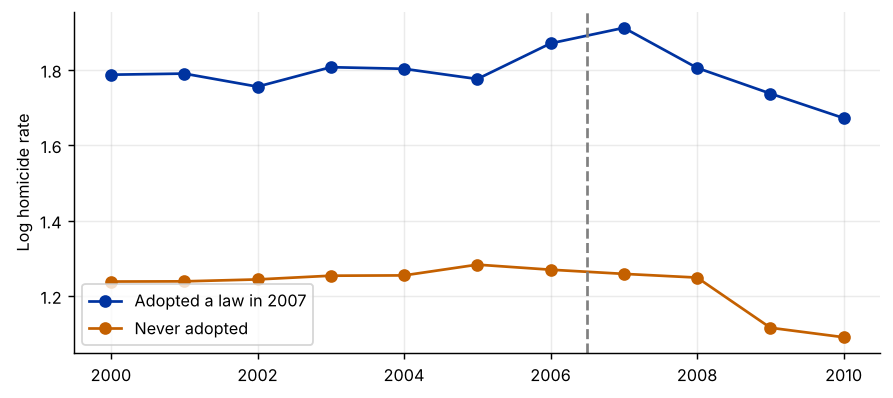
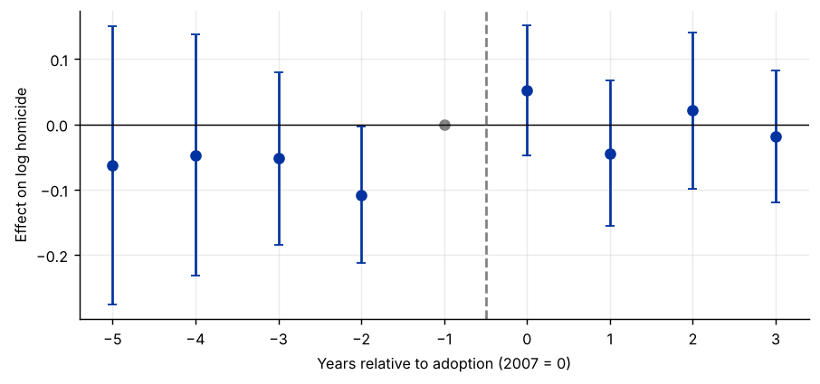

Step 1The question and the design
Between 2005 and 2010 many U.S. states passed Castle Doctrine or “stand-your-ground” laws, which remove the duty to retreat before using lethal force in self-defence. Supporters argued they would deter crime; critics that they would escalate confrontations. Did the laws change homicide rates? This guide uses the 13 states that adopted a law in 2007 and the 29 states that never did, from the data of Cheng and Hoekstra (2013). States adopting in other years are left out, so every treated state shares one adoption date. (The staggered-DiD guide uses all of them.)
The difference-in-differences estimate compares the change in homicide in adopting states with the change in non-adopting states over the same years:
| Symbol | Variable in the file | Definition |
|---|---|---|
| \(\ln h_{st}\) | l_homicide |
Log homicides per 100,000 population |
| \(D_{st}\) | castle_law |
1 in a treated state from the year its law took effect |
| \(\alpha_s\), \(\lambda_t\) | — | State and year fixed effects |
| \(\tau\) | — | The DiD estimate: the average effect on the treated (ATT) |
The identifying assumption
\(\tau\) is causal under parallel trends: without the laws, homicide in the adopting states would have changed by the same amount as in the non-adopting states. The levels may differ (the state effects absorb that); the changes must not. The assumption cannot be tested after 2007, but its implication for the years before 2007 can, and the event study does so.
How to write it: design
We compare homicide rates in the 13 states that enacted Castle Doctrine laws in 2007 with those in states that did not enact such laws between 2000 and 2010, using a difference-in-differences design with state and year fixed effects. The identifying assumption is that, absent the laws, homicide rates in adopting and non-adopting states would have followed parallel trends.
Step 2Load the data and look at the two groups
import pandas as pd
import numpy as np
import matplotlib.pyplot as plt
import statsmodels.formula.api as smf
from linearmodels.panel import PanelOLS
df = pd.read_csv("castle_2007.csv")
treated = df.groupby("state")["castle_law"].max().rename("treated_state")
df = df.join(treated, on="state")
print(f"{df['state'].nunique()} states ({treated.sum()} treated), {df['year'].min()}-{df['year'].max()}, {len(df)} state-years")
means = df.groupby(["year", "treated_state"])["l_homicide"].mean().unstack()
fig, ax = plt.subplots()
ax.plot(means.index, means[1], marker="o", label="Adopted a law in 2007")
ax.plot(means.index, means[0], marker="o", label="Never adopted")
ax.axvline(2006.5, color="grey", ls="--")
ax.set_ylabel("Log homicide rate"); ax.legend()42 states (13 treated), 2000-2010, 462 state-years

How to read it
Adopting states have higher homicide rates throughout: that difference in levels is what the state fixed effects remove. What matters is whether the two lines move in parallel before 2007. By eye they track each other reasonably closely, with year-to-year noise. The event study turns this impression into a test.
Step 3The 2×2 difference-in-differences
df["post"] = (df["year"] >= 2007).astype(int)
cell = df.groupby(["treated_state", "post"])["l_homicide"].mean().unstack()
cell.index = ["Never adopted", "Adopted in 2007"]; cell.columns = ["2000-2006", "2007-2010"]
cell["change"] = cell["2007-2010"] - cell["2000-2006"]
print(cell.round(4))
print(f"\nDifference-in-differences: {cell.loc['Adopted in 2007', 'change'] - cell.loc['Never adopted', 'change']:.4f}")2000-2006 2007-2010 change Never adopted 1.2544 1.1782 -0.0762 Adopted in 2007 1.7981 1.7811 -0.0169 Difference-in-differences: 0.0593
How to read it
This table is the whole idea of DiD. Each group's change from before to after removes its permanent level; the difference between the two changes removes everything common to both groups in the later years (national crime trends, the recession). What remains is attributed to the law. With one adoption date and a balanced panel, this number is exactly the two-way fixed-effects estimate in the next step.
Step 4Estimate the two-way fixed-effects model
panel = df.set_index(["state", "year"])
twfe = PanelOLS.from_formula("l_homicide ~ castle_law + EntityEffects + TimeEffects", panel).fit(cov_type="clustered", cluster_entity=True)
print(twfe.summary.tables[1])
print(f"Clusters (states): {twfe.entity_info['total']:.0f}")
print(f"Effect in percent: {100 * (np.exp(twfe.params['castle_law']) - 1):.1f}%") Parameter Estimates
==============================================================================
Parameter Std. Err. T-stat P-value Lower CI Upper CI
------------------------------------------------------------------------------
castle_law 0.0593 0.0801 0.7397 0.4599 -0.0982 0.2167
==============================================================================
Clusters (states): 42
Effect in percent: 6.1%How to read it
- Estimate. The laws are associated with homicide rates about 6% higher, but the confidence interval is wide and includes zero: in this subsample the effect is not statistically significant.
- Clustered standard errors. The treatment varies at the state level and homicide is serially correlated within states, so standard errors must be clustered by state (Bertrand, Duflo and Mullainathan 2004). With 42 clusters this is fine; with fewer than about 30, use the wild cluster bootstrap.
Step 5Event study: test the pre-trends and trace the dynamics
df["rel"] = np.where(df["treated_state"] == 1, df["year"] - 2007, np.nan)
leads_lags = [k for k in range(-5, 4) if k != -1] # -1 is the base year
for k in leads_lags:
name = f"e_m{-k}" if k < 0 else f"e_p{k}"
df[name] = (df["rel"] == k).astype(int)
df["e_m5"] = (df["rel"] <= -5).astype(int) # bin the distant leads
terms = [f"e_m{-k}" if k < 0 else f"e_p{k}" for k in leads_lags]
es = PanelOLS.from_formula("l_homicide ~ " + " + ".join(terms) + " + EntityEffects + TimeEffects",
df.set_index(["state", "year"])).fit(cov_type="clustered", cluster_entity=True)
co, se = es.params[terms], es.std_errors[terms]
fig, ax = plt.subplots()
ks = leads_lags + [-1]
ax.errorbar(leads_lags, co, yerr=1.96 * se, fmt="o", capsize=3)
ax.scatter([-1], [0], color="grey")
ax.axhline(0, color="black", lw=.8); ax.axvline(-0.5, color="grey", ls="--")
ax.set_xlabel("Years relative to adoption (2007 = 0)"); ax.set_ylabel("Effect on log homicide")
leads = [t for t in terms if t.startswith("e_m")]
w = es.wald_test(formula=", ".join(f"{t} = 0" for t in leads))
print(f"Joint test that the leads are zero: chi2({w.df}) = {w.stat:.2f} p-value = {w.pval:.3f}")Joint test that the leads are zero: chi2(4) = 6.71 p-value = 0.152

How to read it
Each point is the difference between adopting and non-adopting states in that year, relative to 2006 (year −1).
- Leads (before adoption). They fluctuate around zero, and the joint test does not reject that they are all zero. There is no evidence that adopting states were already on a different path before 2007. That is the implication of parallel trends that can be checked.
- Lags (after adoption). The estimated effects after 2007 are small and imprecise: no clear sign of a jump in homicide among this group of states.
An insignificant pre-trend test is not proof of parallel trends: the test may simply lack power. A referee may ask for a sensitivity analysis (Rambachan and Roth 2023), which shows how large a violation of parallel trends would have to be to overturn the conclusion.
Step 6Robustness: placebo date and a different comparison
pre = df[df["year"] <= 2006].copy()
pre["fake"] = ((pre["treated_state"] == 1) & (pre["year"] >= 2004)).astype(int)
plac = PanelOLS.from_formula("l_homicide ~ fake + EntityEffects + TimeEffects", pre.set_index(["state", "year"])).fit(cov_type="clustered", cluster_entity=True)
print(f"Placebo law in 2004 (pre-period only): {plac.params['fake']:.4f} (s.e. {plac.std_errors['fake']:.4f}), p-value {plac.pvalues['fake']:.3f}")
from causal_tests import event_study # helper file on this site: examples/causal_tests.py
cs = event_study(df, unit="state", time="year", y="l_homicide", treat="castle_law")
print(f"Event-study average of post years (base 2006): {cs['att']['est']:.4f} (bootstrap s.e. {cs['att']['se']:.4f})")Placebo law in 2004 (pre-period only): 0.0059 (s.e. 0.0792), p-value 0.941 Event-study average of post years (base 2006): 0.0024 (bootstrap s.e. 0.0357)
How to read it
- Placebo date. Pretending the law took effect in 2004 and using only pre-2007 data should give no effect. It does not, which supports the comparison.
- Different base period. The event-study average uses only 2006 as the base year, while the TWFE estimate uses the average of all pre-treatment years. The two answers differ because individual years are noisy, but both point estimates are small relative to their uncertainty. Report both and say so.
Step 7Write the paper
How to write it: results
Table 1 reports the difference-in-differences estimates. Homicide rates in states that enacted Castle Doctrine laws in 2007 rose by about 6 percent relative to non-adopting states, but the estimate is imprecise and not statistically different from zero (standard errors clustered by state). Event-study estimates show no differential pre-trends: the coefficients for the years before adoption are jointly insignificant, and a placebo law dated to 2004 has no effect.
Common mistakes
- Using this two-way fixed-effects regression when units adopt at different dates. The estimate can then be badly biased; see the staggered-DiD guide.
- Not clustering at the level of treatment assignment.
- Treating insignificant leads as proof of parallel trends. Show the event-study plot, and consider a sensitivity analysis.
- Controlling for variables that the policy itself affects (bad controls).
- Ignoring anticipation: if behaviour changes when a law is announced, the base period must precede the announcement.